2025
西 祐樹 — JAPAN PAIN WEEK 2025 奨励賞「しびれ同調経皮的電気刺激の即時効果を規定する臨床指標：末梢・中枢神経障害を対象とした疾患横断的決定木分析」
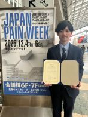
2025
高橋 あゆみ — 第11回日本骨格筋電気刺激研究会学術集会 優秀演題賞「重症疾患筋障害ならびに重症疾患神経筋障害に由来した筋線維萎縮に対するB-SESの効果」
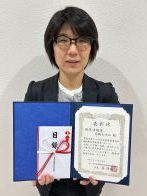
2025
本田 祐一郎 — 第57回日本結合組織学会学術大会 Young Investigator Award「不動化によって惹起される骨格筋の線維化の発生メカニズムにはPiezo1/AMPK/PGC-1α経路を介したミトコンドリアの機能不全が関与する」
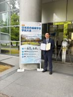
2024
三宅 純平 — 九州理学療法士学術大会2024 in 佐賀 新人賞「廃用性筋萎縮に対する骨格筋電気刺激の効果 ―筋内深度別の検討―」
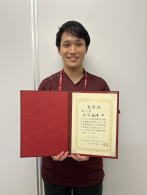
2024
石木 雄大 — 第10回日本骨格筋電気刺激研究会学術集会 優秀演題賞「重症疾患ミオパチーモデルラットの筋線維萎縮に対するB-SESの生物学的効果の検討 ―日内介入頻度の影響―」
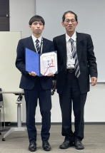
2024
本川 智子 — 第28回日本ペインリハビリテーション学会学術大会 優秀賞「末期変形性膝関節症モデルラットに対する筋収縮運動は末梢・脊髄レベルの病態を抑制することで痛みを軽減する」
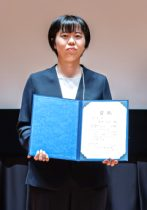
2024
三宅 純平 — 長崎大学学長賞（長崎大学大学院医歯薬学総合研究科保健学専攻修士課程）
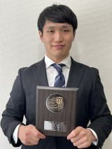
2023
三宅 純平 — 第9回日本骨格筋電気刺激研究会学術集会 優秀演題賞「ベルト式骨格筋電気刺激法が筋構成タンパク質の分解系の分子動態におよぼす影響」
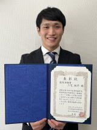
2023
沖田 星馬 — 第9回日本骨格筋電気刺激研究会学術集会 優秀演題賞「不動によって惹起される筋痛に対するベルト電極式骨格筋電気刺激法（B-SES）の効果」
2023
沖田 星馬 — 第27回日本ペインリハビリテーション学会学術大会 最優秀賞「電気刺激誘発性筋収縮運動による不活動性筋痛の進行抑制効果は刺激強度が影響する」
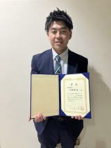
2023
片岡 英樹 — 第27回日本ペインリハビリテーション学会学術大会 優秀賞「脊椎圧迫骨折患者に対する行動医学的介入を併用した遠隔リハビリテーションの実践」
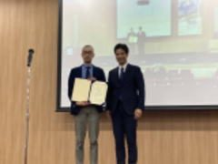
2022
佐々木 遼 — 第10回日本運動器理学療法学会学術大会 優秀賞「変形性股・膝関節症患者の身体活動量や痛みに対する運動療法と患者教育の効果 ―メタアナリシスによる検討―」
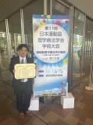
2022
本川 智子 — 第56回日本ペインクリニック学会 最優秀演題賞「低強度の筋収縮運動が末期変形性膝関節症モデルラットの痛みにおよぼす機序の検討」
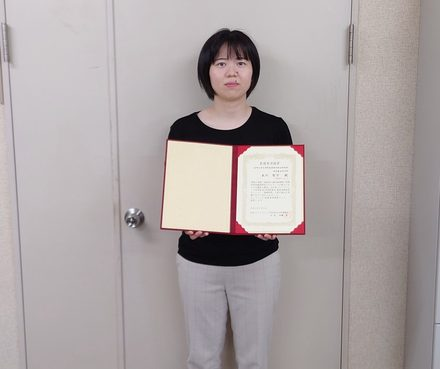
2022
本田 祐一郎 — 第54回日本結合組織学会学術大会 Young Investigator Award「不動化した骨格筋における線維化の発生メカニズムにはミトコンドリアの機能不全を介した筋核のアポトーシスが関与する」
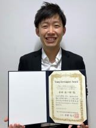
2022
後藤 響 — 第26回日本ペインリハビリテーション学会学術大会 優秀賞「大腿骨近位部骨折術後患者に対する共有意思決定に基づいた行動医学的介入の効果に関する予備的検討」
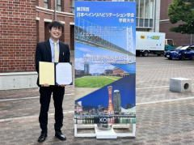
2022
佐々木 遼 — 第2回日本物理療法研究会学術大会 最優秀賞「低強度パルス超音波フォノフォレーシス療法による鎮痛効果の検証」
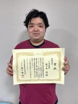
2021
梶原 康宏 — 第7回日本骨格筋電気刺激研究会学術集会 優秀演題賞「B-SESによる不動性骨萎縮の発生予防効果の検討」
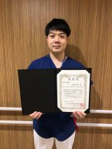
2021
片岡 英樹 — 第25回日本ペインリハビリテーション学会学術大会 優秀賞「脊椎圧迫骨折患者に対する行動医学的介入を併用したリハビリテーションの効果検証 ―無作為化比較試験―」
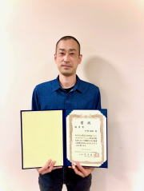
2019
本田 祐一郎 — 第6回日本骨格筋電気刺激研究会学術集会 優秀演題賞「不動化したラットヒラメ筋における線維化と筋線維萎縮に対するB-SESの効果 ―日内介入頻度の影響―」
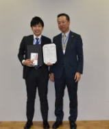
2018
中林 紘二 — 第4回日本基礎理学療法学会学術集会 学会長賞「不動ならびにその過程で実施する持続的他動運動が患部の炎症や二次性痛覚過敏におよぼす影響」
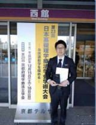
2018
本田 祐一郎 — 第5回日本骨格筋電気刺激研究会学術集会 優秀演題賞「B-SESによるラットヒラメ筋の筋性拘縮の進行抑制効果に関する検討」
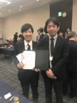
2018
大賀 智史 — 第23回日本ペインリハビリテーション学会学術大会 優秀賞「骨格筋におけるマクロファージの動態ならびに末梢神経密度の変化は不動性筋痛の発生メカニズムに関与するのか？」
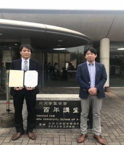
2018
田中 なつみ — 長崎大学学長賞（長崎大学大学院医歯薬学総合研究科保健学専攻修士課程）
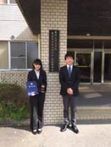
2017
片岡 英樹 — 第4回日本骨格筋電気刺激研究会学術集会 最優秀演題賞「下肢の重篤な関節可動域制限を呈した障害高齢者に対するB-SESと他動運動の併用効果」
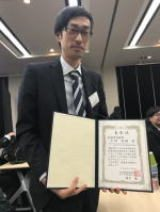
2017
佐々木 遼 — 第22回日本ペインリハビリテーション学会学術大会 最優秀賞「寒冷療法の痛み軽減メカニズムの検討 ―ラット膝関節炎モデルを用いた実験的検討―」
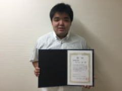
2017
佐々木 遼 — 長崎大学学長賞（長崎大学大学院医歯薬学総合研究科保健学専攻修士課程）
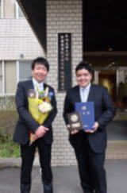
2016
川内 春奈 — 長崎大学学長賞（長崎大学大学院医歯薬学総合研究科保健学専攻修士課程）
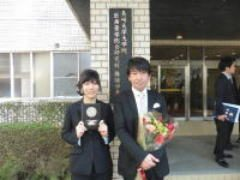
2015
後藤 響 — 第50回日本理学療法学術大会 優秀賞「不動によって惹起される皮膚性拘縮における線維化の発生メカニズムに関する検討」
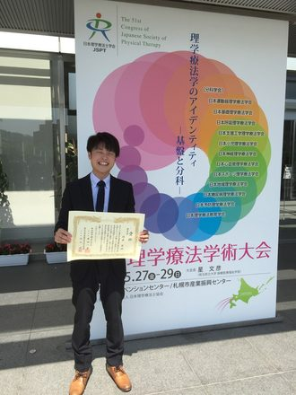
2015
川内 春奈 — 日本基礎理学療法学会雑誌第18巻 優秀論文賞「関節リウマチモデルラットの痛みと炎症に対する温熱刺激の影響」
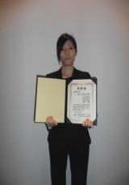
2015
寺中 香 — 第20回日本ペインリハビリテーション学会学術大会 優秀賞「電気刺激を用いた感覚刺激入力ならびに筋収縮運動がラット膝関節炎モデルの痛みや炎症におよぼす影響」
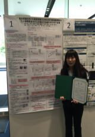
2015
寺中 香 — Pain Research 2014年 優秀論文「ラット膝関節炎モデルに対する患部の不動ならびに低強度の筋収縮運動が腫脹や痛覚閾値におよぼす影響」
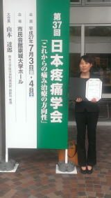
2015
中野 治郞 — 第20回日本緩和医療学会学術大会 最優秀演題「保存療法を行うがん患者のうつ傾向が下肢筋力におよぼす影響とそれに対する低強度運動プログラムの効果」
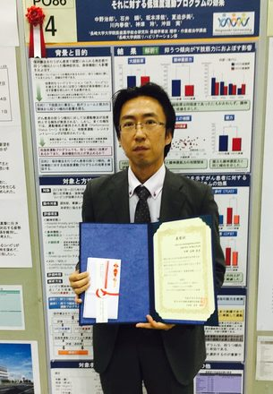
2015
本田 祐一郎 — 第47回日本結合組織学会学術大会 Young Investigator Award「Relationship between changes in extensibility and fibrotic molecules in immobilized skeletal muscle」
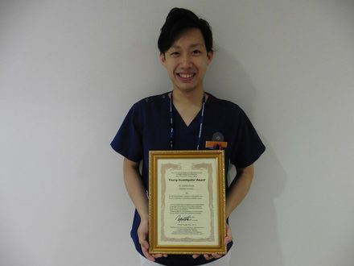
2015
Sakamoto J — Journal of Physical Therapy Science 2014年 優秀論文「Investigation and macroscopic anatomical study of referred pain in patients with hip disease」 J Phys Ther Sci. 26:203-208, 2014.
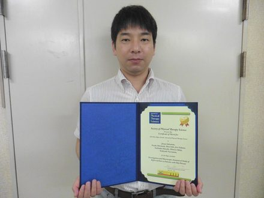
2014
吉村 彩菜 — 第49回日本理学療法学術大会 優秀賞「電気刺激を用いて不動の過程で骨格筋に周期的な筋収縮を負荷すると線維化ならびに拘縮の発生が抑制される」
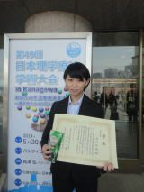
2014
中願寺 風香 — 長崎大学学長賞（長崎大学大学院医歯薬学総合研究科保健学専攻修士課程）
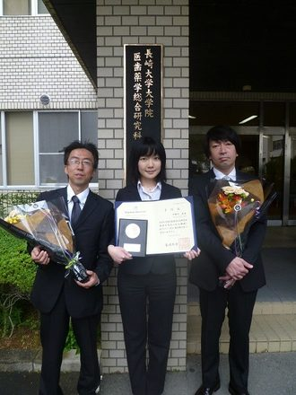
2013
中願寺 風香 — 第18回日本ペインリハビリテーション学会学術大会 最優秀賞「不動期間に実施する不動部位以外の運動が痛みにおよぼす影響」
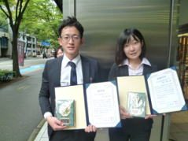
2013
濱上 陽平 — 第18回日本ペインリハビリテーション学会学術大会 優秀賞「不動由来の痛みに対する振動刺激の効果 ―不動早期からの感覚入力は痛覚過敏の発生を抑制する―」
2013
Yoshida N — Journal of Physical Therapy Science 2013年 優秀論文「Effects of combination therapy of heat stress and muscle contraction exercise induced by neuromuscular electrical stimulation on disuse atrophy in the rat gastrocnemius」
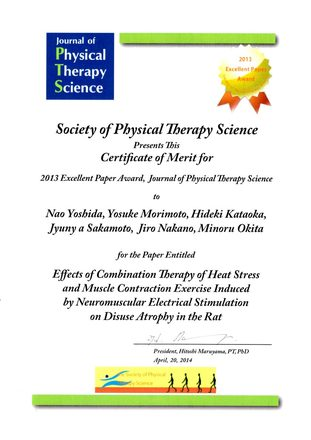
2012
関野 有紀 — 第47回日本理学療法学術大会 優秀賞「不動に伴う痛み発生メカニズムの探索 ―皮膚組織に着目して―」
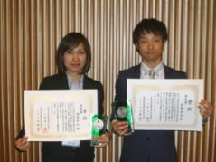
2012
吉野 孝明 — 第47回日本理学療法学術大会 奨励賞「ラット膝関節炎モデルに対する持続的他動運動の早期介入が腫脹や痛みにおよぼす影響」
2012
佐々部 陵 — 長崎大学学長賞（長崎大学大学院医歯薬学総合研究科保健学専攻修士課程）
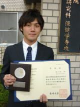
2012
関野 有紀 — 第4回日本線維筋痛症学会 優秀演題賞「ラット足関節不動モデルにおける皮膚および骨格筋の痛み」
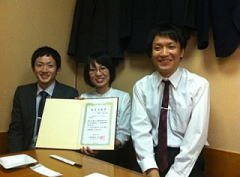
2012
関野 有紀 — 長崎大学学長賞（大学院医歯薬学総合研究科医療科学専攻博士課程）
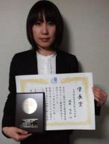
2011
関野 有紀 — 第4回日本運動器疼痛学会 最優秀奨励賞「不動に由来する痛みと皮膚における組織学的変化」
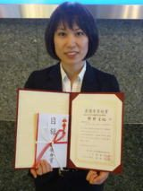